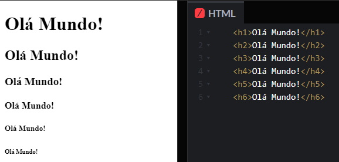

Nesta página, eu vou explicar para que servem algumas das principais tags HTML. As tags HTML são usadas para informar ao navegador a estrutura e o conteúdo de um site. Elas são formadas por elementos que se conectam entre si formando a página.
As tags h1 ate h6 são usadas para criar títulos e subtítulos na página. Elas variam do maior (h1) ao menor (h6) tamanho.
Por exemplo:
A tag A tag p é usada para criar parágrafos na página. Ela separa o texto em blocos com espaçamento entre eles.
Por exemplo:
b e strong para negrito/texto forte;i e em para itálico/ênfase; sup e sub para sobrescrito e subscrito, respectivamente;ins e del para indicar trechos que foram incluídos ou removidos, respectivamente;small para textos menores que o padrão;mark para texto destacado:
Por exemplo:

A tag A tag font é usada para alterar a cor, o tamanho ou a fonte do texto. Ela tem alguns atributos que podem receber valores diferentes.
Por exemplo:


A tag abbr é usada para abreviar uma palavra ou uma frase. Ela tem um atributo chamado title que recebe o significado completo da abreviação.
Por exemplo:

A tag ol é usada para criar listas ordenadas na página.A tag ul é usada para criar listas não ordenadas na página, As tags ol e ul definem as listas e a tag li define cada item da lista.
Por exemplo:


https://www.devmedia.com.br/html-basico-codigos-html/16596
https://www.w3schools.com/TAGS/tryit.asp?filename=tryhtml_abbr_test
https://www.alura.com.br/artigos/html-tags-elementos-block-level